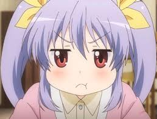

SELAMAT DATANG DI WEBSITEKU
Selamat datang di website saya. Di sini Anda dapat menemukan profil saya dan kegiatan yang saya lakukan.
Penampilan
Renge adalah seorang gadis muda yang memiliki rambut lavender yang diikat dua kuncir dengan pita kuning (pita kuning sepertinya diberikan oleh Dagashiya (Toko Permen) ketika dia masih bayi) dan mata coklat kemerahan yang selalu setengah terbuka. Dalam bab 4 "Non Non Biyori Ingat", Renge menggunakan ekor kuda di satu sisi seperti yang digunakan Kaede di masa mudanya.
Kepribadian
Salah satu karakter utama dalam serial Non Non Biyori, Renge adalah salah satu yang paling unik dan misterius, ia dianggap sebagai anak dewasa sebelum waktunya dengan sisi tomboy. Dia memiliki sifat penasaran dan rasa penamaan yang unik. Dia mendapat nilai bagus di sekolah dan telah menunjukkan keterampilan artistik yang sangat baik. Ia bahkan mempelajari perkalian hanya berdasarkan saran Konomi Fujimiya untuk menggunakan penjumlahan sebagai dasar perkalian. Dia terbukti ramah dan penuh kasih sayang dan suka berada di dekat orang-orang. Dia akhirnya mengembangkan kepribadian yang lebih dewasa selama musim ketiga.
Kemampuan dan Keterampilan
Keterampilan artistik: Meski masih duduk di bangku kelas satu, Renge menunjukkan keterampilan artistik yang luar biasa termasuk memenangkan tempat pertama dalam Kontes Seni Anak-Anak.